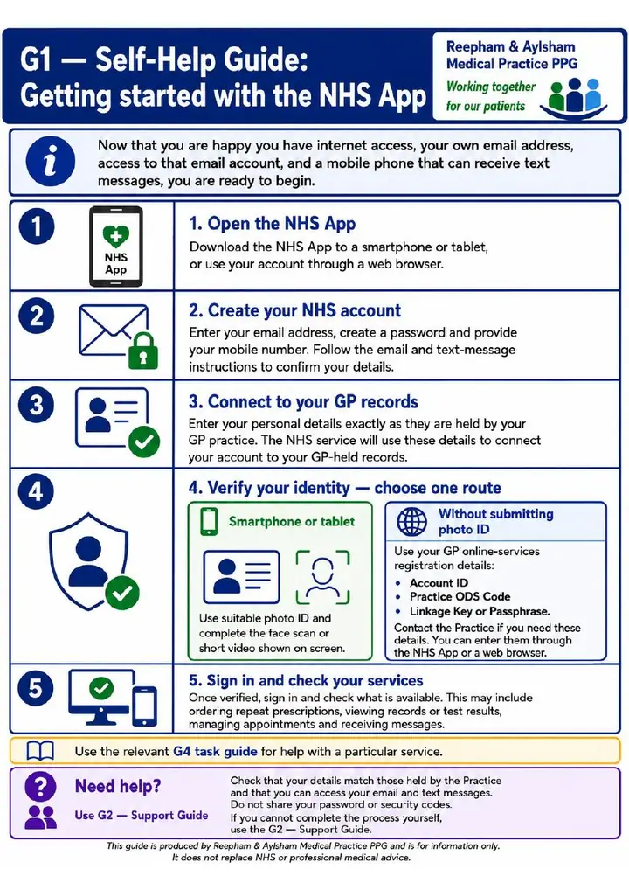
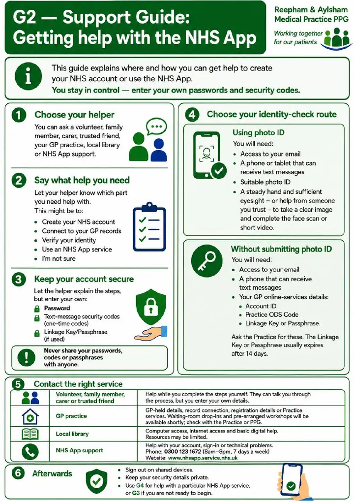
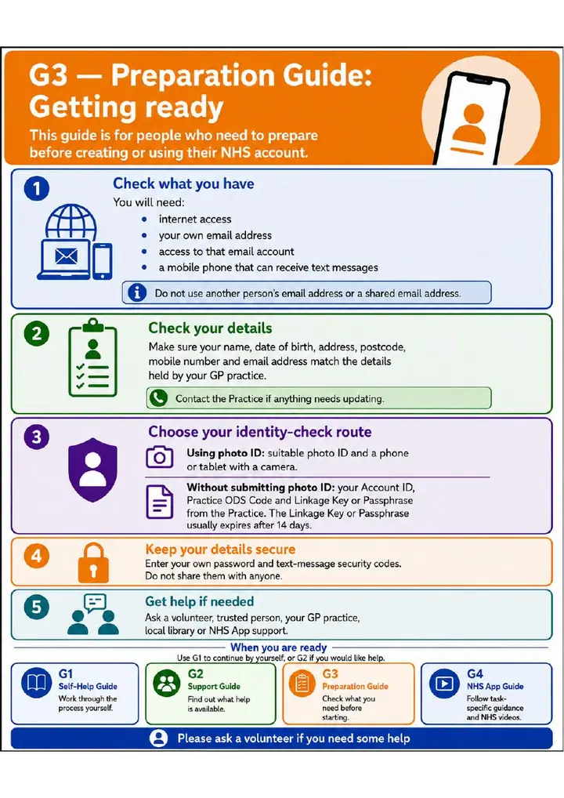
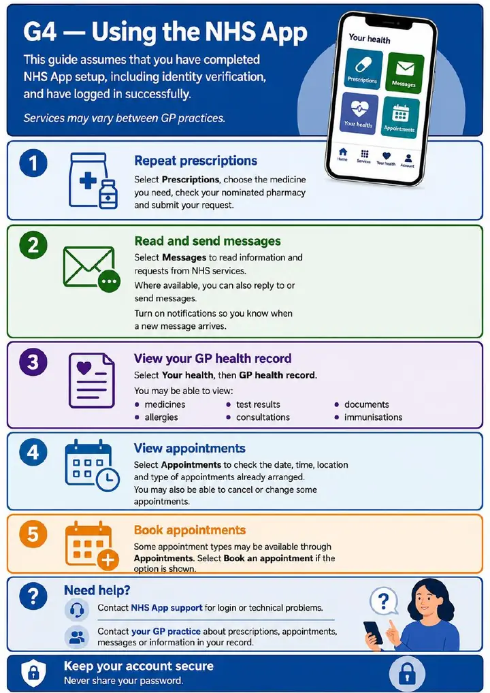

Getting Started overview
Find the best route and choose G1, G2, G3 or G4.
Download each guide separately, or download the complete five-page set.
Find the best route and choose G1, G2, G3 or G4.

For people who want to work through NHS account setup themselves.

For people who would like help while entering their own passwords and security codes.

For people who need to prepare email access, text messages, details or identity-check information.

For prescriptions, messages, records, appointments and other available services after setup.
Includes Getting Started, G1, G2, G3 and G4 in one five-page high-resolution PDF.
Download complete set